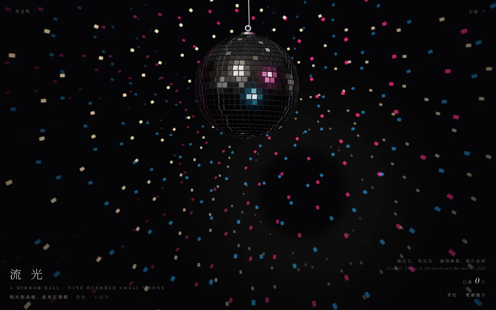
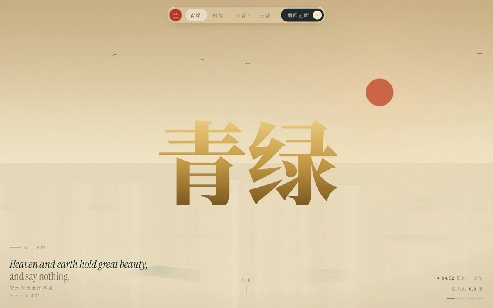
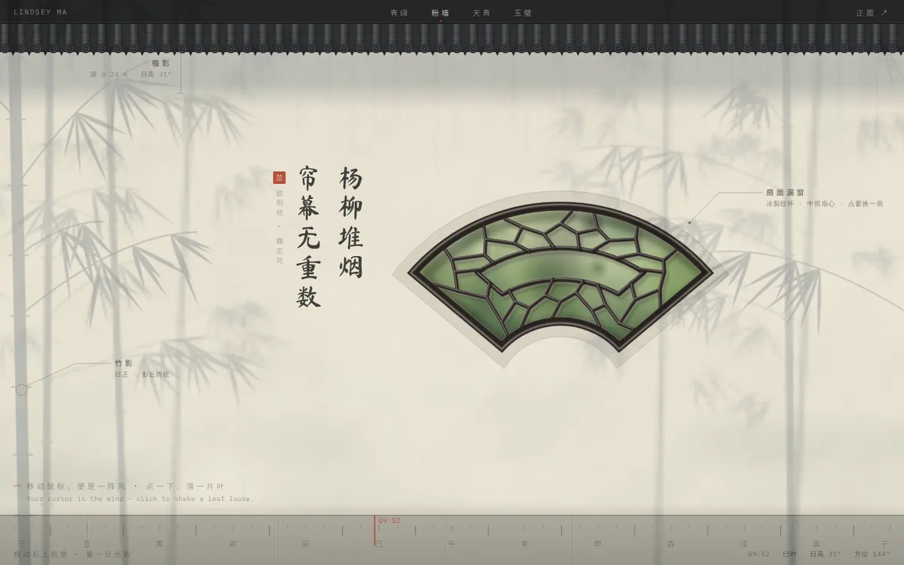
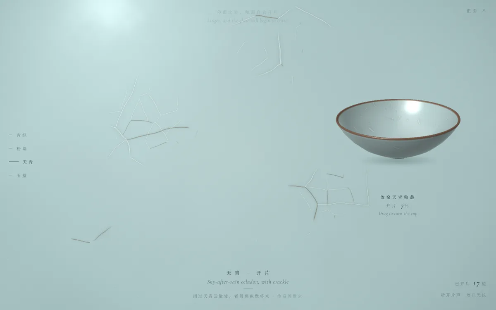
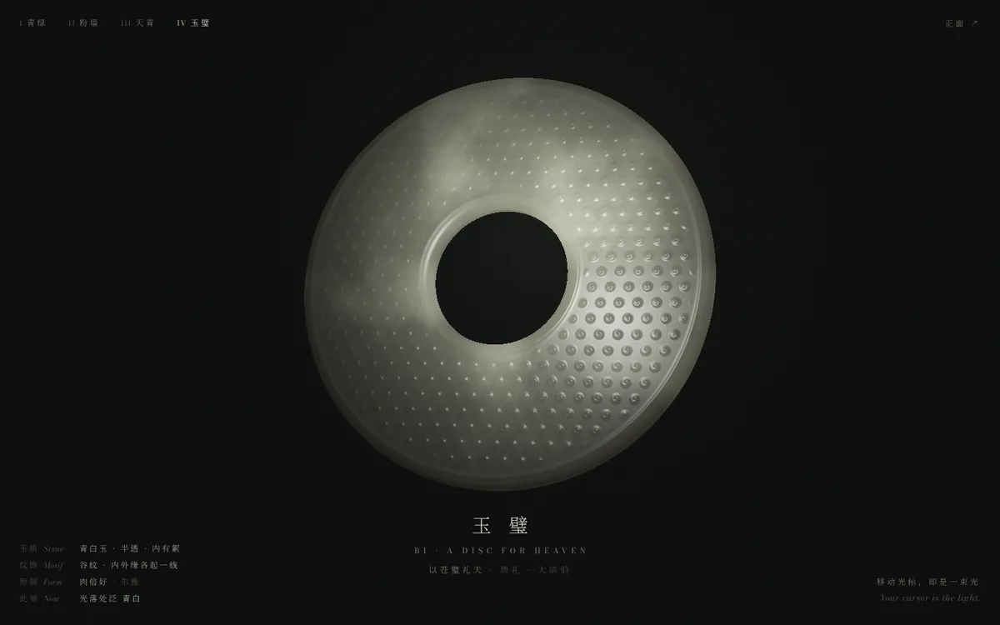
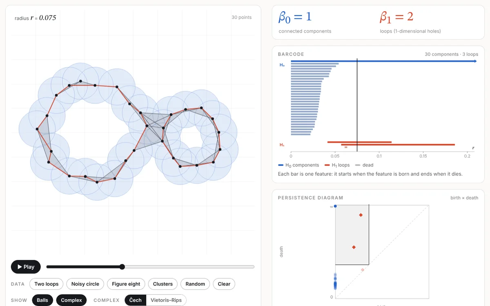
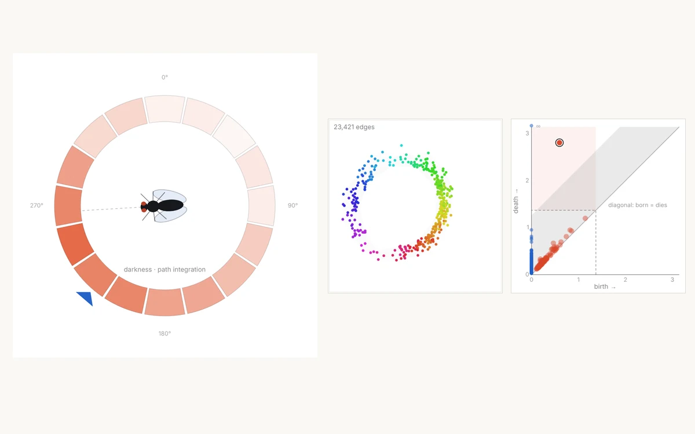

Claude vibe-coding projects
Small interactive experiments in light, physics and traditional Chinese colour, built together with Claude. Each one is something to play with.

A disco ball with real physics. Grab it, throw it, and knock the mirrors loose.

Scroll into a blue-green landscape painting.

Bamboo shadows on a garden wall. Your cursor is the wind; drag the sun through the day.

A Ru-ware cup whose glaze slowly crackles the longer you linger.

An ancient jade disc. Your cursor is the light.

Grow balls around points and watch components and loops be born and die, recorded live as a barcode.

A fruit-fly brain circuit wired from two real connectomes, running live. Turn the fly, then ask topology whether its neural activity is a ring, and compare with real mouse neurons, awake and asleep.